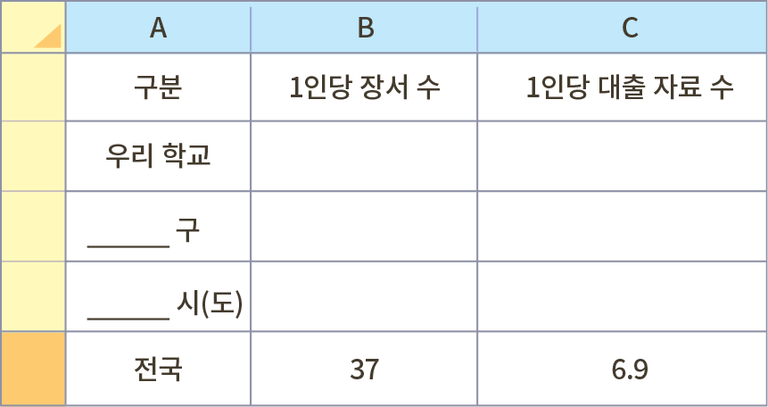
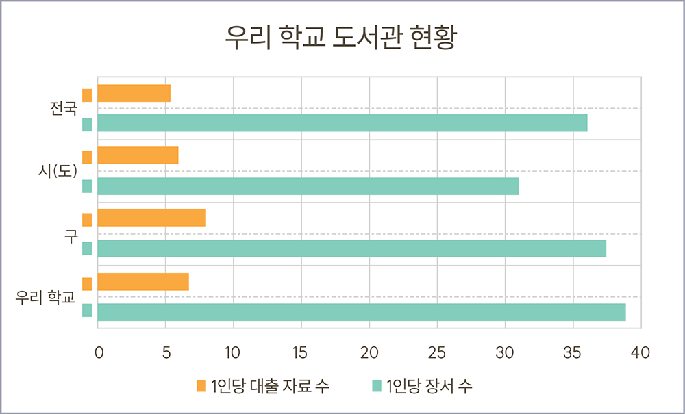

데이터를 기반으로 의견 주장하기
‘학교알리미’ 사이트에서 우리 학교의 ‘학교 도서관 현황’ 데이터를 찾아보고 이를 근거로 나의 의견을 주장해 보자.
학교알리미
schoolinfo.go.kr
※ 데이터 위치
[우리 학교 검색] - [교육 여건] - [학교 도서관 현황]
1 학교 도서관 현황 데이터를 스프레드시트로 정리해 보자.

2 스프레드시트의 기능을 사용해서 1의 데이터를 막대그래프로 시각화해 보자.
예

이전
다음